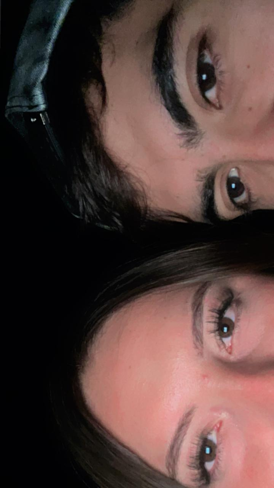
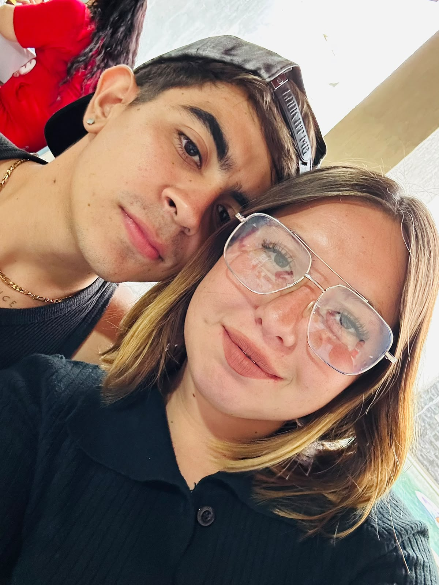
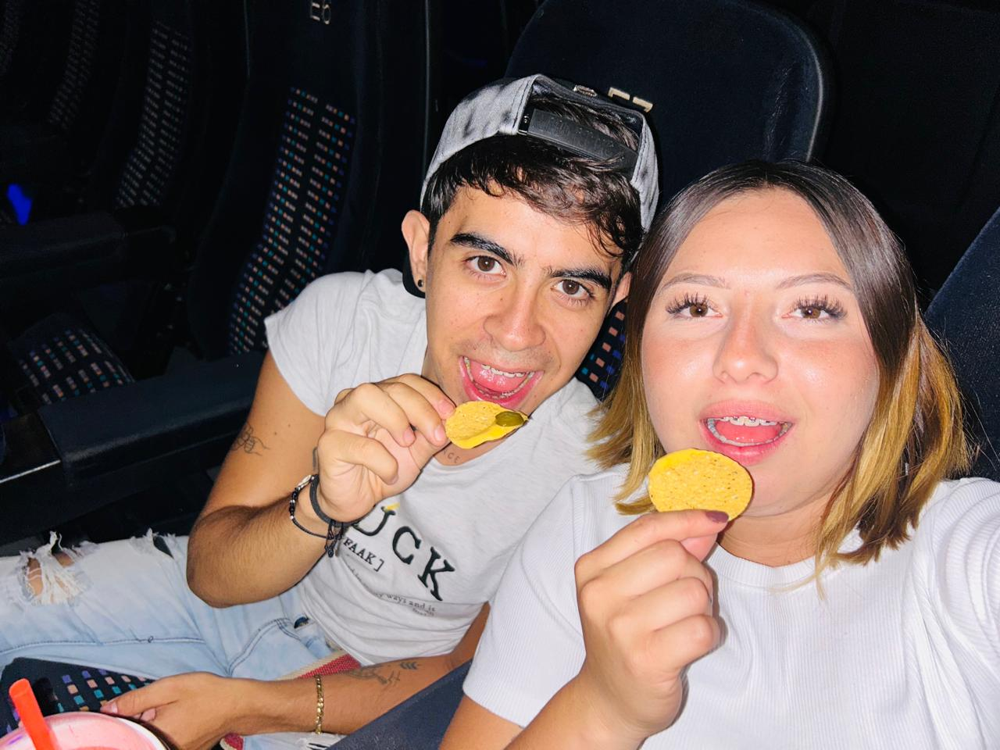

Hola, Atziri
Esta flor es solo el comienzo, hacia tiempo que no te daba una, he creado este espacio para nosotros.
Llenando mi vida de luz desde hace:
00Días
00Horas
00Min
00Seg
Nuestros Momentos


